給油記録とレシート読み取り
走行距離・給油量・金額を入力するだけ。レシートをカメラで写せば、油種・給油量・金額の入力をAIが補助します。
NEW EV/PHEV充電・AI整備読み取りに対応
給油・燃費・整備・車検・維持費、そしてドライブの思い出まで。フィドカは、車とバイクの毎日をまるごと記録できる車両管理アプリです。入力はかんたん、計算と集計は自動。記録するほど、愛車のことがもっとよくわかります。
iOS 15.1以降に対応(Android版は近日公開) · 基本機能はアカウント登録なしでも利用できます
こんな経験、ありませんか
レシートは財布の中、整備の記憶はあいまい、維持費はどんぶり勘定。フィドカは、そんな「なんとなく」をぜんぶ数字と記録に変えます。
手計算もアプリの乗り換えも面倒で、結局わからないまま。フィドカなら給油を記録した瞬間に燃費まで自動計算します。
整備の時期はつい忘れがち。走行距離と日付にもとづくリマインド通知が、車検やオイル交換の「そろそろ」を教えてくれます。
給油・整備・保険・税金。月別・年別の費用レポートで、愛車にかかったお金がひと目でわかるようになります。
実は近くにもっと安い店があるかも。現在地周辺のガソリン価格を地図と一覧で比較して、経路案内までつなげられます。
フィドカでできること
ガソリン車・ディーゼル・ハイブリッド・PHEV・EV、そしてバイクまで。車両ごとに記録を分けて、燃費も費用も整備も、これ一つで管理できます。
走行距離・給油量・金額を入力するだけ。レシートをカメラで写せば、油種・給油量・金額の入力をAIが補助します。
満タン法の実燃費(km/L)と1kmあたりの走行コストを自動で計算。グラフで調子の変化も追えます。
充電量・電気代・充電前後の残量・EV走行距離を記録。電費(km/kWh)も自動で確認できます。
オイル交換からタイヤ、バッテリーまで。整備明細書・請求書・領収書は写真やPDFからAIがまとめて抽出します。
車検・保険・自動車税の更新時期と費用予測、オイル交換などの整備時期を通知。車検証QRの読み取りにも対応。
現在地周辺のスタンドを価格・距離で比較。お気に入り店舗の価格チェックや経路案内もできます。
給油費・充電費・整備費・車両費用を月別・年間で自動集計。「この車にいくらかかっているか」に即答できます。
写真や動画、距離、天気、メモと一緒にドライブを保存。連続再生や共有で、思い出をアルバムのように残せます。
給油記録
給油のたびにメモを取る必要はありません。レシートをカメラで写すと、AIが金額・給油量・単価を読み取って入力を補助。保存した瞬間に、満タン法の実燃費と1kmあたりの走行コストまで自動計算されます。もちろん、テンキーでのすばやい手入力にも対応しています。
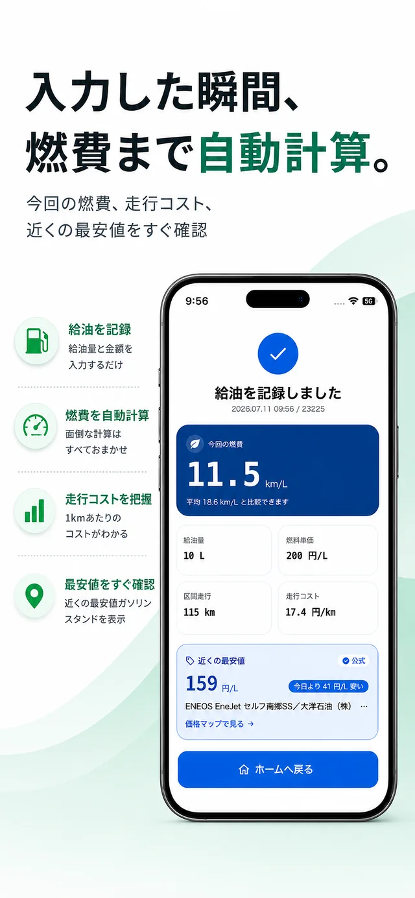
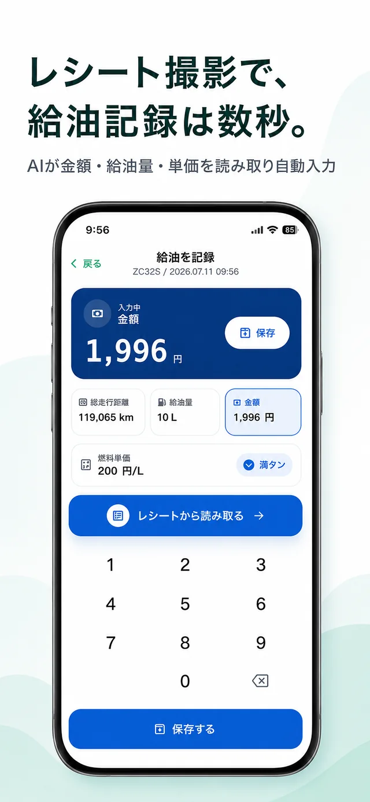
ガソリン価格マップ
現在地周辺のガソリンスタンドを地図と一覧で表示。レギュラー・ハイオク・軽油の油種を切り替えながら、価格・距離・更新状況をまとめて比較できます。気になる店舗を選べばそのまま経路案内へ。給油記録とつながっているから、「今日はいつもより安く入れられた」まで見えてきます。
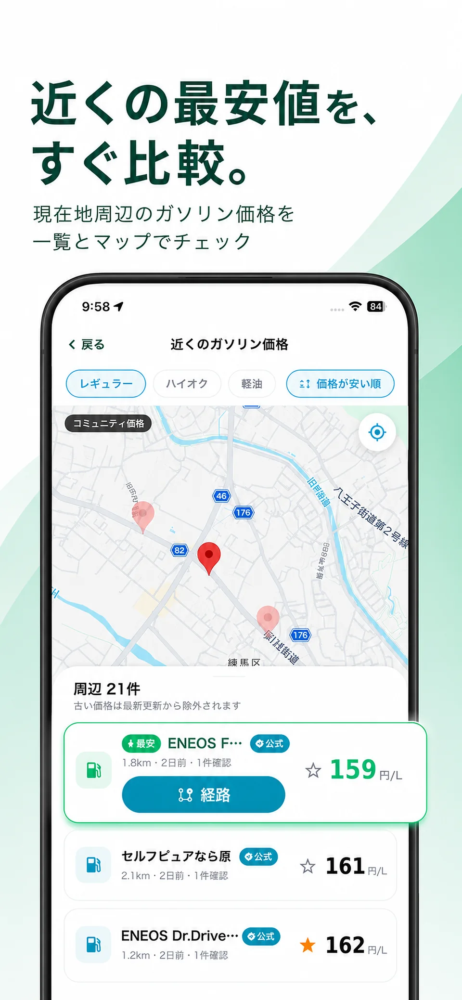
EV / PHEV対応
クルマの動力が変わっても、記録の場所は変えなくていい。フィドカはガソリン車・ディーゼル・ハイブリッドに加えて、EV・PHEVの充電記録に対応。充電量や電気代、充電前後のバッテリー残量、EV走行距離を残せば、電費まで自動で見えてきます。PHEVなら給油と充電、両方の記録をひとつの車両にまとめられます。
愛車のすべてを一か所に
整備の履歴も、燃費の変化も、かかったお金も、出かけた思い出も。ぜんぶがつながって、あなたと愛車だけのデータベースになります。
整備明細書・請求書・領収書の写真やPDFから、日付・店舗・走行距離・整備項目・費用をAIが抽出。内容を確認・修正して、複数の整備記録をまとめて保存できます。ディーラーの明細も、量販店のレシートも、ため込んだ紙の束もこれで一気に記録に変わります。
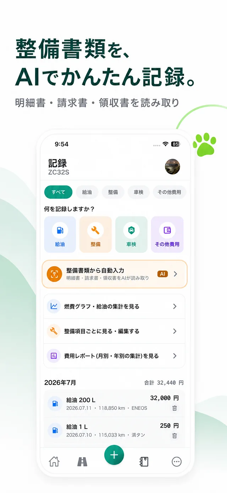
満タン法の区間燃費を季節補正済みの目安と重ねて表示。「いつもよりちょっと悪い」に早く気づけるから、タイヤの空気圧やオイルの交換時期を考えるきっかけになります。
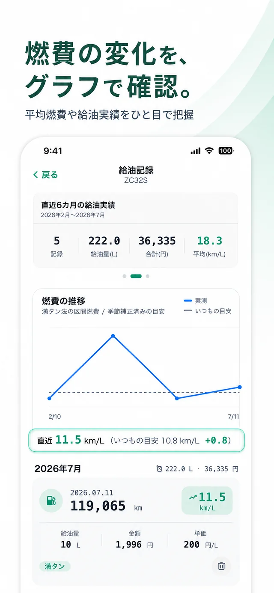
給油・充電・整備・車両費用を月別・年間で自動集計し、内訳と推移をグラフで表示。複数台をまとめた集計もできるので、家のクルマ全体の維持費もすぐわかります。
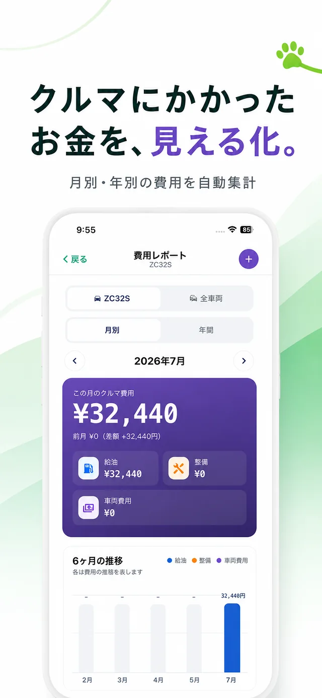
ドライブごとに写真・動画・距離・天気・メモを保存。連続再生でアルバムのように振り返ったり、家族や友人に共有したり。愛車と過ごした時間そのものが、フィドカに積み重なっていきます。Pro+なら写真・動画をクラウドに保存(合計最大50GB)できるので、端末の容量も安心です。
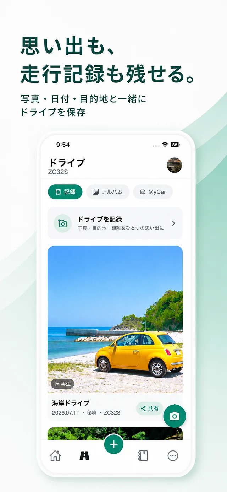
忘れない仕組み
記録した日付と走行距離から、次の整備や更新の時期を予測して通知。うっかり忘れて慌てることが、ぐっと減ります。
オイル交換・タイヤ・バッテリー・点検など、項目ごとに通知の日程や距離を設定。前回の記録から「あと何km」も見えます。
車検・保険・自動車税の更新時期と費用予測を通知。車検証QRコードの読み取りで車両情報の登録もスムーズです。
通知時刻は好きな時間に変更OK。必要な通知だけを受け取れるので、リマインドがうるさくなりません。
持ち出せる、守れる
記録はまず端末内に保存。必要なときにPDFやCSVで書き出せて、機種変更のときも引き継げます。売却や譲渡のとき、きちんと残した整備記録簿はそのまま愛車の価値になります。
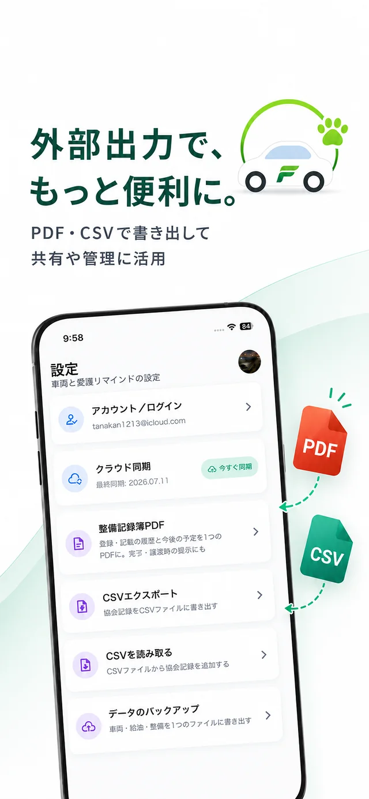
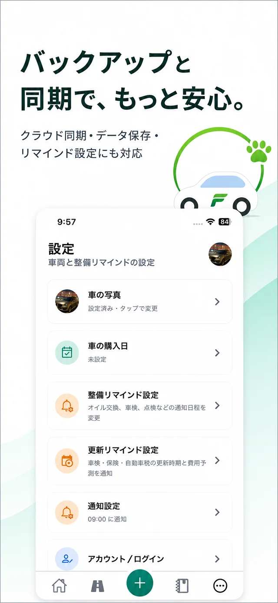
アプリ画面
横にスクロールして、フィドカの画面をひとつずつご覧ください。
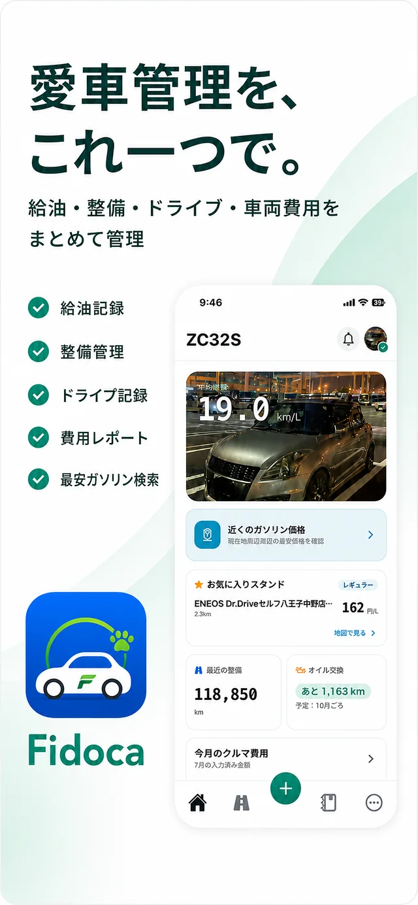
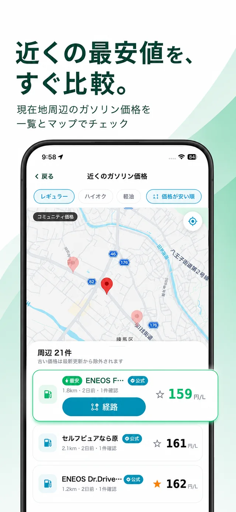
始め方はかんたん
App Storeから無料でダウンロード。アカウント登録なしで、そのまま使い始められます。Webからのメール登録にも対応しています。
車両名と走行距離を入れるだけ。車検証のQRコードを読み取れば、車両情報の入力もスムーズです。バイクももちろんOK。
給油したらレシートをパシャリ。整備したら書類をパシャリ。燃費も費用も集計も、ぜんぶフィドカにおまかせください。
無料から使える
まずは無料プランで、給油も整備もドライブもたっぷり記録。広告なしで快適に使いたくなったら、いつでもアップグレードできます。
まず記録を始めたい方に
広告なしで、もっと便利に
複数台とクラウドをフル活用
表示はWeb価格(税込)です。App Storeでの価格は購入画面に表示され、Web価格と異なる場合があります。アプリで購入したPro / Pro+はWebでも同じプランとして使えます。Pro+のクラウド上の写真・動画は、解約または失効から90日後に削除されます(端末内のデータは残ります)。
よくある質問
そのほかのご質問は、サポートまでお気軽にお問い合わせください。
support@fidoca.jp無料プランでは車両1台について、給油・充電・整備・費用の記録、燃費・電費の自動計算、レシート読み取り、ガソリン価格マップ、費用レポート、ドライブ記録まで利用できます。無料プランでは広告が表示されます。
基本機能はアカウント登録なしで利用できます。記録はまず端末内に保存されます。クラウド同期、AI読み取り、購入・復元など一部の機能ではログインが必要です。Apple・Google・メールでのログインに対応し、Webからも登録できます。
はい。フィドカは車だけでなくバイクの管理にも対応しています。車両ごとに給油・整備・費用を分けて記録でき、燃費計算やリマインド通知もバイクで同じように使えます。
使えます。充電量・電気代・充電前後のバッテリー残量・EV走行距離を記録でき、電費(km/kWh)を自動で確認できます。PHEVは給油と充電の両方をひとつの車両で管理できます。ガソリン・ディーゼル・ハイブリッドにも対応しています。
整備明細書・請求書・領収書の写真またはPDFから、日付・店舗・走行距離・整備項目・費用をAIが抽出する機能です。結果は保存前に必ず確認・修正でき、複数の整備記録をまとめて登録できます。無料のお試し枠(累計3ページ)があり、Proは月2ページ、Pro+は月5ページの利用枠が付与されます。
データのバックアップ機能で、車両・給油・整備の記録を1つのファイルに書き出して新しい端末で復元できます。Pro+なら自動バックアップとクラウド同期により、新しい端末でログインするだけで記録を引き継げます。
はい。Webとアプリは同じアカウントで購読状態を共有します。同じメールアドレスでログインすると、アプリでも同じプランが有効になります。アプリ内で購入したPro / Pro+も同様にWebで使えます。
レシート画像と読み取りテキスト全文は、通常のクラウド同期や価格共有では送信されません。AI読み取りを実行した場合のみ、その都度選択した写真・PDFを処理のためサーバーへ送信します。ガソリン価格の共有も初期状態ではOFFで、アプリ内から明示的に有効にした場合のみ利用されます。詳しくはプライバシーポリシーをご覧ください。
現在はiOS版(iOS 15.1以降)をApp Storeで配信中です。Android版は近日公開予定です。
フィドカは日本向けに、円・km/L・km/kWh・日本語表示を前提として作っています。
FIDOCA — YOUR CAR, YOUR STORY.
毎日の給油も、月イチの洗車も、いつかの整備も、遠くへのドライブも。愛車と過ごす時間のぜんぶを、ひとつの場所に残していこう。